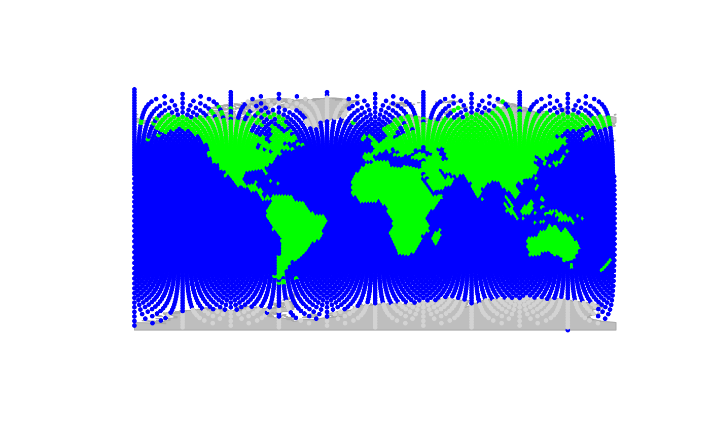
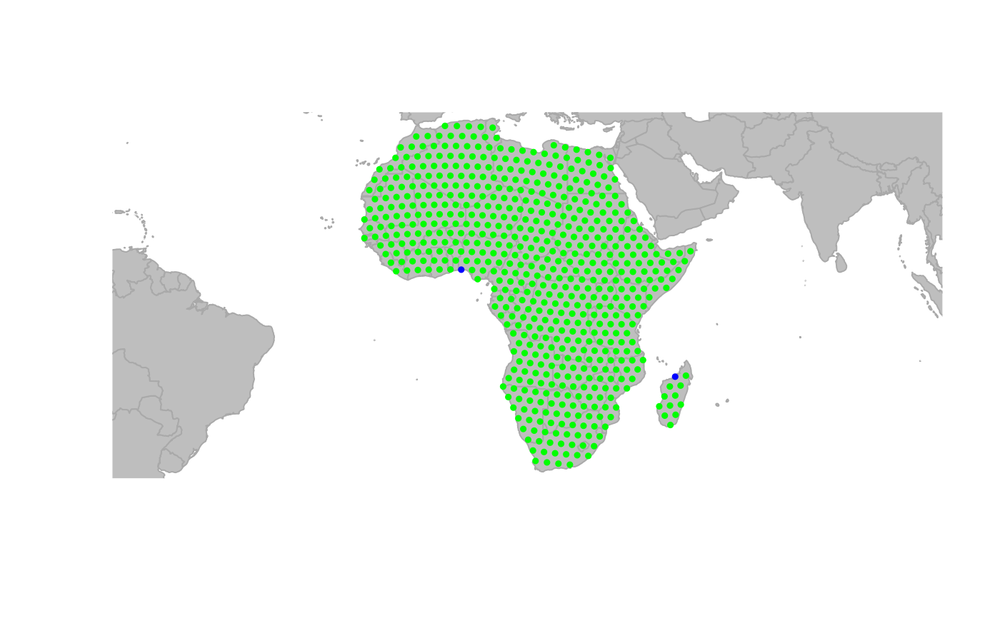

The function assignByPolygon uses information from a GIS polygon
shapefile to define node attributes. For each node, information is
retrieved from the layer and assigned to that node.
Usage
assignByPolygon(x, ...)
# S4 method for class 'matrix'
assignByPolygon(x, layer = "world", attr = "all", ...)
# S4 method for class 'data.frame'
assignByPolygon(x, layer = "world", attr = "all", ...)
# S4 method for class 'numeric'
assignByPolygon(x, layer = "world", attr = "all", ...)
# S4 method for class 'list'
assignByPolygon(x, layer = "world", attr = "all", ...)
# S4 method for class 'gGraph'
assignByPolygon(x, layer = "world", attr = "all", ...)
# S4 method for class 'gData'
assignByPolygon(x, layer = "world", attr = "all", ...)Arguments
- x
a matrix,
data.frame, list, validgGraph, or validgDataobject. For matrix and data.frame, input must have two columns giving longitudes and latitudes. For list, input must have two components being vectors of longitudes and latitudes.- ...
further arguments passed to other methods (currently unused).
- layer
a shapefile of class
sf(seesf::st_readto import a GIS shapefile). Alternatively,"world"to use the built-in world shapefile.- attr
a character vector of variable names to extract from the layer. Use
"all"to extract all available variables.
Value
For matrix, data.frame, or list input: a data.frame with one row
per location and one column per requested variable. For gGraph input:
a gGraph object with new node attributes added to @nodes.attr. For
gData input: a gData object with new data added to @data.
Details
Nodes can be specified as a matrix, data.frame, list, gGraph, or
gData object. Outputs match the input format.
The gGraph method can be memory-intensive for large graphs
since it assigns attributes to all nodes.
Functions
assignByPolygon(matrix): Method for matrix inputassignByPolygon(data.frame): Method for data.frames inputassignByPolygon(numeric): Method for numeric vector inputassignByPolygon(list): Method for numeric list inputassignByPolygon(gGraph): Method for gGraph objectsassignByPolygon(gData): Method for gData objects
See also
findLand to find which locations are on land.
assignByRaster to assign attributes from raster data.
Examples
plot(worldgraph.10k, reset = TRUE)
#> Spherical geometry (s2) switched off

## retrieve continent info for all nodes
## (might take a few seconds)
x <- assignByPolygon(worldgraph.10k, layer = "world", attr = "continent")
#> although coordinates are longitude/latitude, st_intersects assumes that they
#> are planar
x
#>
#> === gGraph object ===
#>
#> @coords: spatial coordinates of 10242 nodes
#> lon lat
#> 1 -180.0000 90.00000
#> 2 144.0000 -90.00000
#> 3 -33.7806 27.18924
#> ...
#>
#> @nodes.attr: 2 nodes attributes
#> habitat continent
#> 1 sea <NA>
#> 2 sea <NA>
#> 3 sea <NA>
#> ...
#>
#> @meta: list of meta information with 2 items
#> [1] "$colors" "$costs"
#>
#> @graph:
#> A graphNEL graph with undirected edges
#> Number of Nodes = 10242
#> Number of Edges = 6954
table(getNodesAttr(x, attr.name = "continent"))
#> continent
#> Africa Antarctica Asia Europe North America
#> 603 242 628 455 481
#> Oceania South America
#> 170 361
## subset Africa
temp <- getNodesAttr(x, attr.name = "continent") == "Africa"
temp[is.na(temp)] <- FALSE
x <- x[temp]
plot(x, reset = TRUE)
